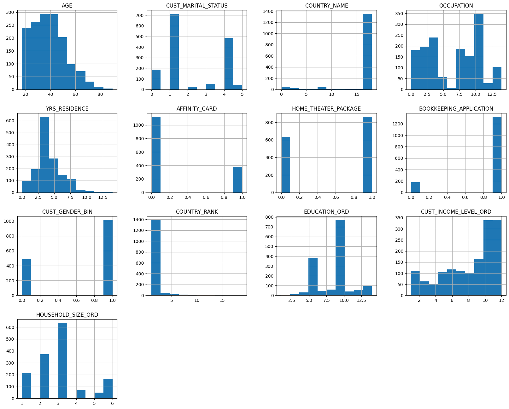

This project combined data analysis and other methods
to understand player skills, team dynamics, and how matches unfold in the IPL.
We built a SQL database to store and access ball-by-ball data.
Using cutting- machine learning (like Logistic Regression, Random Forest, and SVM),
we created models that can predict player and team performance.
Finally, we built interactive dashboards with Power BI to visualize these insights in a clear and engaging way.
Below is one of the many PowerBI dashboard showcasing General Summary.

This project dove into London's housing market.
We explored how various factors (like size or location) influence price,
pinpointing the most impactful ones. We built a model to predict prices
and ensured its accuracy. Addressing outliers,
we used data visualizations to showcase key features
affecting prices and even identified clusters of similar properties.

In this project we analyzed marketing campaign data involving 1500 customers and 19 variables.
We cleaned and transformed the data, identifying key factors influencing affinity card
ownership like years of residence, age, gender, and education.
We built and evaluated two predictive models, with the support vector machine (SVM) model
achieving the highest accuracy at 78%.
